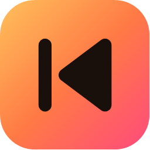
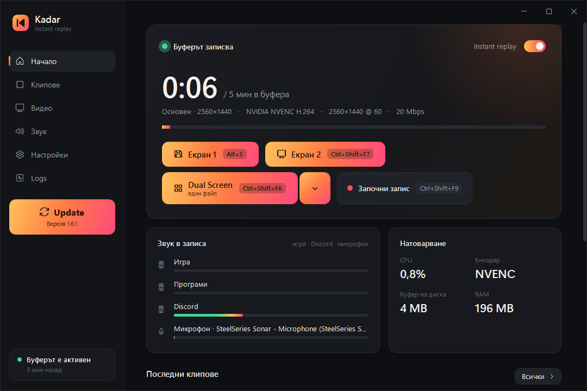
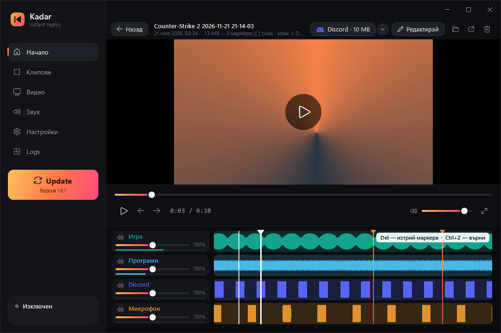

Kadar записва тихо последните минути от играта ти. Стане ли нещо яко, натискаш Alt+S и клипът е готов — със звука на играта, Discord и микрофона на отделни писти.
Изтегли Kadar
Направено за игри с приятели — запазваш момента, режеш го и го пращаш, без да излизаш от играта.
Буфер до 20 минути. Запазваш 20 s, 1 мин или целия буфер с клавиш или от овърлея в играта.
Играта, Discord и микрофонът се записват поотделно — после заглушаваш или усилваш всяка писта в плеъра.
Записва и втория монитор. Клип от единия, от другия или двата един до друг в един файл.
Маркираш „от–до“ направо в плеъра (I / O) и пращаш само тази част. Маркери по време на игра с един клавиш.
Един клик — клипът се компресира под лимита и отива в канала ви, със заглавие, съобщение и тагнати приятели.
Кодира на видеокартата (NVIDIA, AMD, Intel), сам избира най-гладкото заснемане за всяка игра и не износва SSD-то.

Около минута. Kadar се обновява сам, щом излезе нова версия.
Бутона горе — сваля се Kadar.zip (последната версия).
Десен клик → „Extract All…“. Вътре е папка Kadar — сложи я някъде, където няма да я триеш.
Записът тръгва веднага. Alt+S запазва клип, а клиповете са в Videos\Kadar.